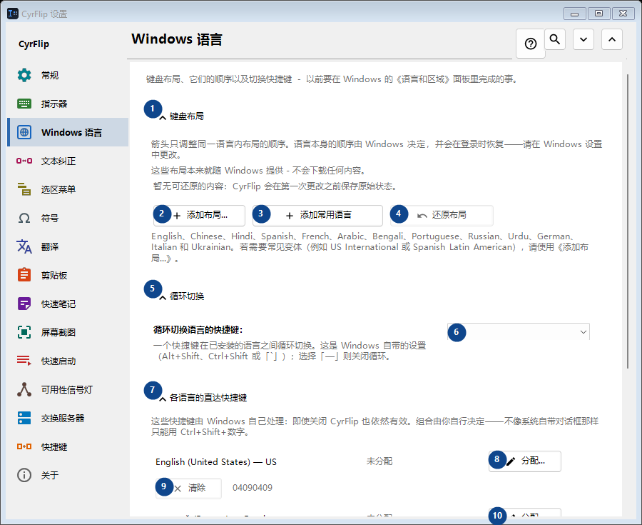
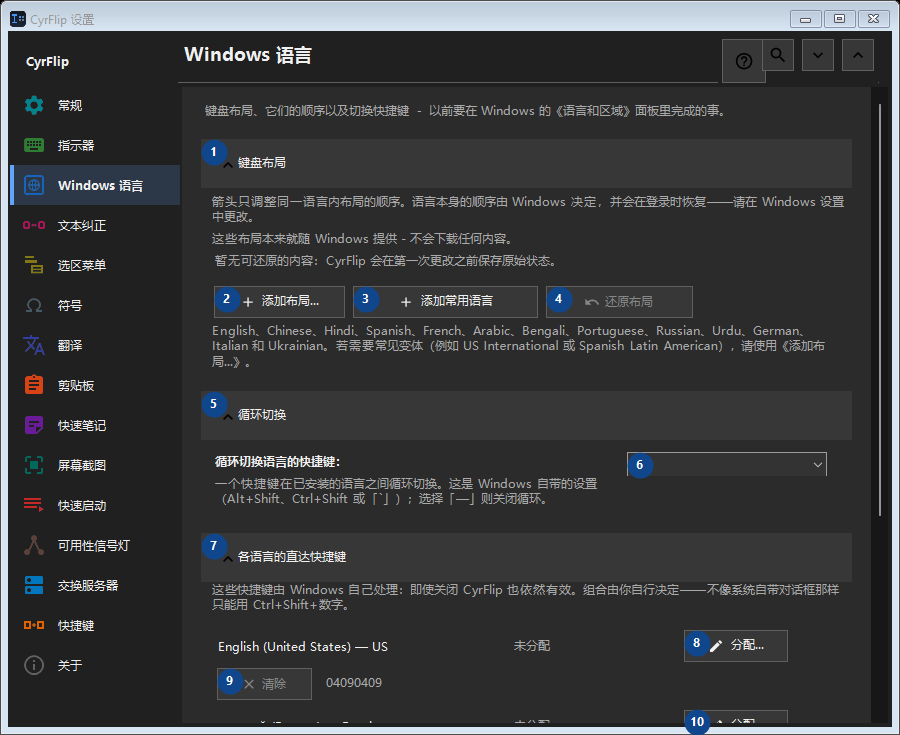

Windows 语言
用途
键盘布局、它们的顺序以及切换快捷键 - 以前要在 Windows 的《语言和区域》面板里完成的事。


使用顺序
设置立即生效，无须按固定顺序操作；请使用以下分组。
界面元素
1. 键盘布局
需要执行上述操作时使用此命令。接受前请阅读确认提示。
你的快捷键2. 添加布局...
需要执行上述操作时使用此命令。接受前请阅读确认提示。
你的快捷键3. 添加常用语言
需要执行上述操作时使用此命令。接受前请阅读确认提示。
你的快捷键4. 还原布局
暂无可还原的内容：CyrFlip 会在第一次更改之前保存原始状态。 此控件当前不可用。请先启用相应功能或选择条目。
你的快捷键5. 循环切换
需要执行上述操作时使用此命令。接受前请阅读确认提示。
你的快捷键6. 循环切换语言的快捷键：
选择或输入旁边标签所指的值。继续前请检查。
你的快捷键7. 各语言的直达快捷键
需要执行上述操作时使用此命令。接受前请阅读确认提示。
你的快捷键8. 分配... - English (United States) - US
需要执行上述操作时使用此命令。接受前请阅读确认提示。
你的快捷键9. 清除 - English (United States) - US
需要执行上述操作时使用此命令。接受前请阅读确认提示。 此控件当前不可用。请先启用相应功能或选择条目。
你的快捷键10. 分配... - русский (Россия) - Russian
需要执行上述操作时使用此命令。接受前请阅读确认提示。
你的快捷键11. 清除 - русский (Россия) - Russian
需要执行上述操作时使用此命令。接受前请阅读确认提示。 此控件当前不可用。请先启用相应功能或选择条目。
你的快捷键12. 还原快捷键
暂无可还原的内容：CyrFlip 会在第一次更改之前保存原始状态。 此控件当前不可用。请先启用相应功能或选择条目。
你的快捷键13. Windows 设置
需要执行上述操作时使用此命令。接受前请阅读确认提示。
你的快捷键14. 打开 Windows 设置
打开 Windows 设置，在那里安装显示语言（即 Windows 自身的翻译）。
你的快捷键